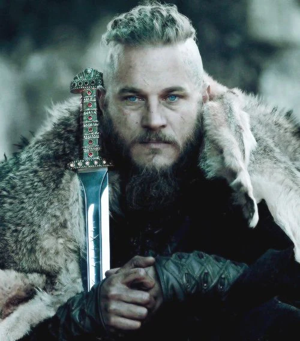

Főszepelők és jellemzésük:

Ragnar Lothbrok
Ragnar Lothbrok egy legendás viking hős és uralkodó, akit a kíváncsiság, a zseniális stratégiai érzék és az ambíció hajtott. Nem egyszerűen egy barbár harcos volt, hanem látnok és felfedező, aki nem elégedett meg a hazai portyákkal, hanem nyugatra, az ismeretlenbe vezette népét, megtámadva többek között Angliát és Párizst. Személyiségét a könyörtelen vezetés és a mély melankólia kettőssége jellemezte: képes volt a legbrutálisabb cselekedetekre, miközben folyamatosan megkérdőjelezte saját hitét, sorsát és cselekedeteinek értelmét. Célja az volt, hogy nevet és örökséget teremtsen fiai számára, akik végül bosszút álltak érte, megalapozva ezzel a dán uralmat Angliában. A sagák és a modern popkultúra is egyaránt karizmatikus, de tragikus alakként ábrázolják.
.jpg)
Lagertha
Lagertha egy legendás viking harcosnő és Ragnar Lothbrok első felesége, aki bátorságáról, harci képességeiről és vezetői kvalitásairól ismert. Nem csupán Ragnar társa volt a kalandokban, hanem önállóan is kiemelkedő szereplője a viking sagáknak. Lagertha története a női erő és függetlenség szimbólumává vált a férfiak uralta viking társadalomban. Harcosként és vezetőként is tiszteletet vívott ki magának, később pedig saját területét is irányította, bizonyítva, hogy a nők is képesek jelentős hatást gyakorolni a történelemre. Legendás tettei és karaktere inspirációt nyújtanak a mai napig a női erő és bátorság megtestesítőjeként.
.jpg)
Rollo Lothbrok
Rollo Lothbrok egy legendás viking vezér, akit a Vikingek című sorozatban Ragnar Lothbrok testvéreként ábrázolnak. A valóságban (és a sorozatban is) a 10. század eleji történelmi alak, Rollo (Hrolfr) ihlette, aki a mai Normandia alapítója volt. Jellemét a fizikai erő, a lojalitás és a belső konfliktus határozza meg. Bár mélyen kötődik viking gyökereihez és testvéréhez, Ragnarhoz, Rollo folyamatosan a saját ambíciói és az elismerés iránti vágya által vezérelve találja magát, ami gyakran vezet áruláshoz és családjával való szakításhoz. Míg Ragnar a felfedező és filozófus, Rollo a megbízható, de ösztönös harcos, aki képes elhagyni a régi életét a biztos hatalomért és a nemesi rangért cserébe, végül sikeresen asszimilálódva a frank kultúrába.
.jpg)
Floki
Floki egy excentrikus és zseniális hajóépítő, aki mélyen hívő pogány vikingként jelenik meg a Vikingek című sorozatban. Ő az, aki megtervezi és megépíti Ragnar Lothbrok híres hajóit, amelyek lehetővé teszik a vikingek számára, hogy felfedezzék és meghódítsák az ismeretlen nyugati partokat. Floki karakterét a kreativitás, hűség és a vallási fanatizmus jellemzi. Mélyen elkötelezett a pogány istenek iránt, ami gyakran konfliktushoz vezet a keresztény hitet valló társai között. Floki különc természete és misztikus világnézete miatt gyakran félreértik, de hűsége Ragnarhoz és a viking közösséghez megkérdőjelezhetetlen. Karaktere a sorozatban a művészet és a hit összefonódását képviseli, miközben belső küzdelmeit is bemutatja a változó világban.
.jpg)
Athelstan
Athelstan egy angolszász szerzetes, aki a Vikingek című sorozatban kulcsszereplőként jelenik meg, bemutatva a keresztény és pogány kultúrák közötti feszültséget és kölcsönhatást. Eredetileg Lindisfarne kolostorából származik, ahol Ragnar Lothbrok és vikingjei fosztogatnak. Miután Ragnar megkíméli életét, Athelstan csatlakozik a vikingekhez, és egyedülálló helyzetbe kerül, mivel két világ között ingázik. Karaktere a hit, az identitás és a lojalitás kérdéseit boncolgatja, miközben mély barátságot alakít ki Ragnarral. Athelstan belső küzdelmei a keresztény hite és a viking életmód között tükrözik a sorozat fő témáit, miközben hozzájárul a történet gazdagításához és komplexitásához.